← 返回阅读库 · 原论文目录
论文讲解阅读文档 · 内容生成 · v006
Regularized Vector Quantization for Tokenized Image Synthesis[2303.06424]
视频时长 00:09:27；讲解文字 4,274 字符；提取讲解画面 23 张。按视频原顺序阅读，每段文字保留时间戳。
文字来自整段视频的自动语音转写，按自然停顿分段，并与 PPT / 论文页面 / 演示画面对齐。未将讲解压缩为摘要；术语、数字和口述公式请结合画面及原论文核对。 阅读稿已校正规范部分明确术语误识别；原始逐字稿和每处修改记录另行保留。
讲解画面为源视频截图（640×360），不是可编辑 PPT 文件。全片按每秒 2 帧扫描内容变化，逐步展开页保留；连续动画保留代表画面。清晰度受源视频限制。
下载完整资料包 · 含离线 HTML、PDF、Word、全部 PPT 画面和字幕。
原论文与材料
Regularized Vector Quantization for Tokenized Image Synthesis · 下载完整 PDF（16 页）
按时间阅读
00:00:00–00:00:20 · 画面 001
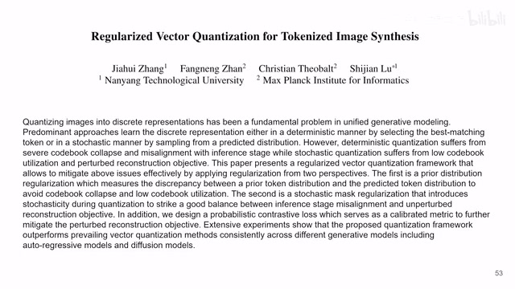
00:00:00–00:00:20 · 画面 001大家好,今天我们来快速说一篇论文 Regularized Vector Quantization for Tokenized Image Synthesis 这篇是针对之前的 VQVAE、VQGAN 这两类文章的一个改进那么如果你对这两篇文章不熟悉非常推荐你去翻看我们之前的视频为什么要改进呢?或者说它问题出在了哪里呢?我们来看到这个图
00:00:20–00:01:30 · 画面 002
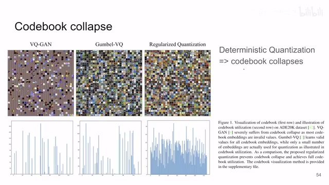
00:00:20–00:01:30 · 画面 002在 VQGAN 这个情况下你可以看到这个图里面已经标出来了这是它的离散化之后的 codebook 那么从每一个 codebook 里面恢复出来的 patch 都在这里列出来了那么这个时候你发现虽然这个 codebook 很大但是真正能重建出有意义的图像块的这些 codebook 用的还是非常少的更多的是就没有意义就放在那里从来也没有人碰它这种感觉那么下面这个图你看到就是在 ADE20K 上这个数据集上去重建所有的这里面的图片嘛然后呢它统计每个 codebook 用到的次数你发现这个它是很稀疏的就是只用了极少的一些特定的 token 而大部分的这些 token 呢都没有用到这不是一个让人满意的结果所以呢本文就据此提出了这个 regularize quantization 你可以看到通过使用本文的方法之后那么大部分的 token 都可以重建出相对有意义的 patch
你可以看到这个使用的次数也是就很明显了就是人人都有份每个 token 呢基本都平均的用到了这是很好的那么本文相对于之前的这个 VQGAN 呢主要是在生成的部分呢提供了三大改进那么第一个呢就是我们在查码表的时候我们从 encoder 出来出来一个 representation 我要把这个 representation 跟这个 codebook 里面所有的这些 representation 做比较嘛然后一般都是找到相似度最高的来作为这个 patch 的这个 token
00:01:30–00:02:37 · 画面 003
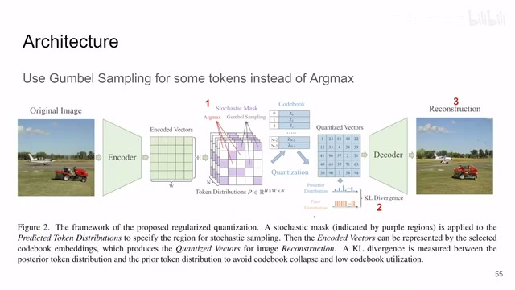
00:01:30–00:02:37 · 画面 003这是标准的解法，那这样就导致你可能在初始化的时候，大家可能都集中在固定的几个 code。那么最终训练出来的时候呢，也有这个 codebook 里面很多 token 都没有用上，这是一个不好的事情。那么所以本文第一个改进它就是，我随机有一个 mask，那么这些 mask 里面的这些 token 呢，它使用这个 Gumbel sampling、softmax 加上一个 temperature。那这样子呢，它就有一定概率飘移到这个 codebook 里面随机取一个任意的这么一个 code 它就有一个概率随机选到那里去那么这样子你编码的时候呢它就不是一个固定的过程它是有带随机性在里面的那通过这个随机性呢你就有可能理论上把所有的这个编码 codebook 里面的 token 都给它覆盖掉那么此外呢作者还在相应的 loss 上做了改动我们马上来看
00:02:37–00:02:38 · 画面 004
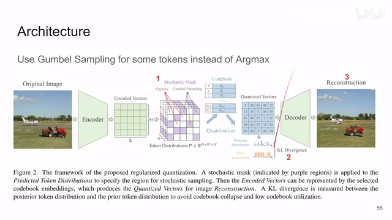
00:02:37–00:02:38 · 画面 00400:02:38–00:02:40 · 画面 005
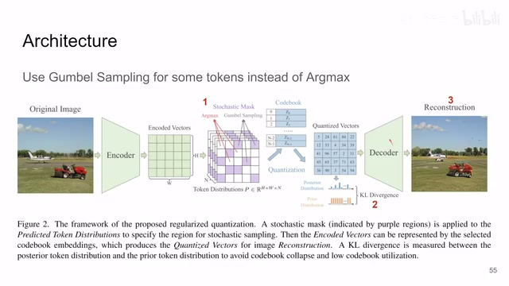
00:02:38–00:02:40 · 画面 005那么然后我们再看第二项改进也就是这个叫做 prior distribution regularization 这个非常简单就是我们希望中想要我们 codebook 里面的所有的 token 所有的 vector 它都被使用那么也就意味着我一张图里面应该尽可能均匀的使用所有的这些 token
00:02:40–00:03:09 · 画面 006
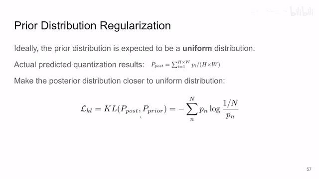
00:02:40–00:03:09 · 画面 006那么现在我只要统计一下每一张图里面统计一下他们到底用了多少个 token 然后这些 token 是不是均匀分布在 codebook 里面统计出来它是一个 distribution 然后你期望它是一个 uniform distribution 你为了让两个 distribution 相等对吧直接做一个 KL divergence 来去优化一下就好了这个是非常直接的一个事情那么然后一项也是比较复杂的一项是 contrastive loss
00:03:09–00:03:10 · 画面 007
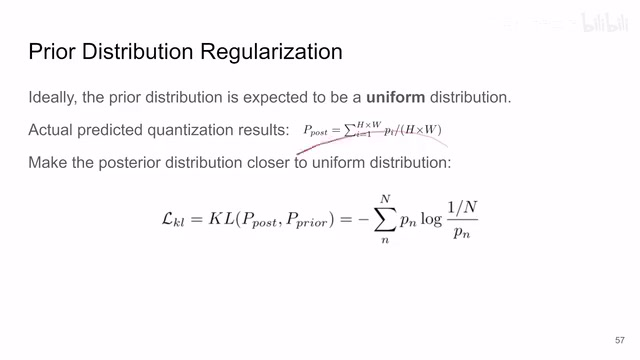
00:03:09–00:03:10 · 画面 00700:03:10–00:03:15 · 画面 008
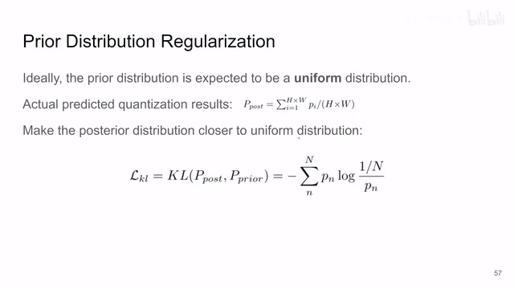
00:03:10–00:03:15 · 画面 00800:03:15–00:03:18 · 画面 009
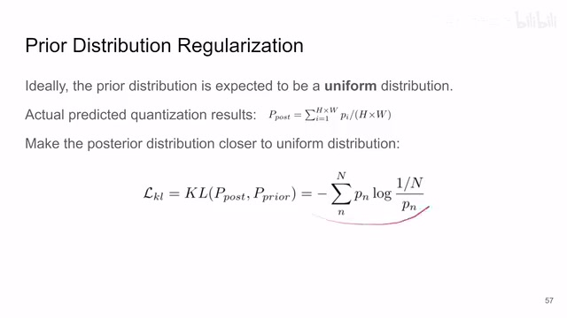
00:03:15–00:03:18 · 画面 00900:03:18–00:03:19 · 画面 010
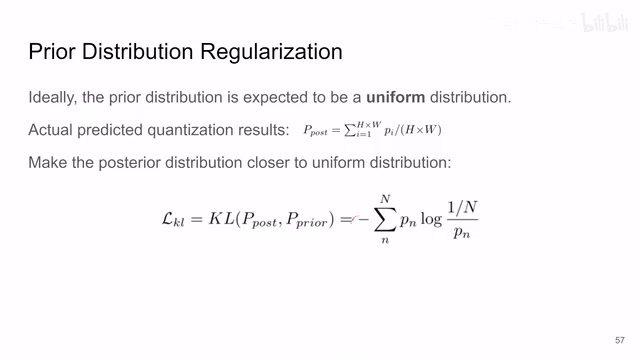
00:03:18–00:03:19 · 画面 01000:03:19–00:05:19 · 画面 011
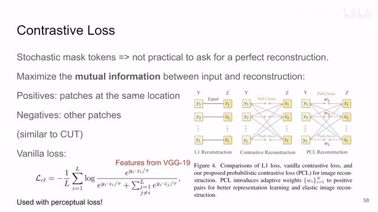
00:03:19–00:05:19 · 画面 011为什么需要这个呢是因为你现在既然在这个图像编码的过程中这个量化的过程中引入了随机性就是你一个 patch 出来编码之后它可能随机飘到 codebook 里面任意一个 token 那么这个时候你根据这个新的 token 再去重建出原始的图像的时候你就不能指望说重建出来的图像跟原来的图像是一模一样的这个是不现实的所以作者这里放弃了原来他们使用的L1 Reconstruction Loss而是采用了一个类似 InfoNCE 那样的一个 Contrastive Loss那么它背后的逻辑
在我们之前 InfoNCE 那篇也说了就是提高两个变量的Mutual Information那么具体来看就是一张图里面你同一个位置上的 patch它们应该相似不同位置上的 patch 应该不同这个原理其实跟我们之前说过的这个 CUT 是非常的像的那么具体构建 Loss 的时候你可以看到 Contrastive Loss那么分子上你 Positive Sample 的 Similarity这边除个 Temperature分母上是所有的 Sample 之间的这个 Similarity
你看像它这个图上显示的一样Y1 和 Z1因为它们的位置是相同的位置所以它们的 Representation 应该靠近那 Y1 和其他的这些 patch Z1 和其他的 patch它们不在同一个位置上它的相似度应该远离这是它的 Contrastive Loss而至于每一个 patch 的 feature 从哪里来这里作者是把它送到 VGG19 里面就是 VGG19就中间特定的层取号 feature。
然后它们做 Similarity 就好了。这个是一个标准版的 Contrastive Loss当然作者说Contrastive Loss 跟 Perceptual Loss也就是把所有的这些 VGG 的 feature 取出来做 L2 跟它是一起用的。那么因为作者没有详细说这个事情。我们先把这个 Perceptual Loss 放到一边。
但是同样的你 VGG19 出来有很多层的 feature
00:05:19–00:05:32 · 画面 012
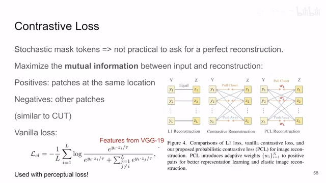
00:05:19–00:05:32 · 画面 012你这么多层它们是怎么结合在一起呢。这个作者也没有讲清楚。但是大概的思路呢就是还是 contrastive learning 的一个思路那么当然作者在这个基础上呢也有进一步的改进对于这些通过 Gumbel sampling 出来的这些 sample 就是一个 patch 它量化之后出来的 token 未必是跟它最像那个 token 因为它中间有这个 Gumbel sampling 有这个随机性嘛对于这样的 token 呢作者这里引入了这个 weighting parameters 它量了一下这个被抽出来的这个 token 和最相似的这个 token 之间它们的这个距离
00:05:32–00:06:00 · 画面 013
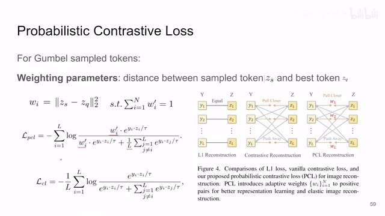
00:05:32–00:06:00 · 画面 013那么这个欧式距离呢作为这个地方的权重，再把所有的距离统计一下作为一个 normalization，这样做完之后呢，它相当于每一个 patch 之间的相似度这里有一个权重，也就是说你抽到的这个 token 跟你已知的这个最好的 token 它的距离越大，那么它们之间相互的这个吸引力也就越强，那么按照它的 formulation 呢得到的结果呢是这个样子。
00:06:00–00:06:01 · 画面 014
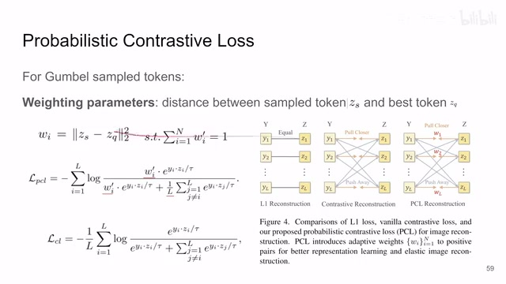
00:06:00–00:06:01 · 画面 01400:06:01–00:06:20 · 画面 015
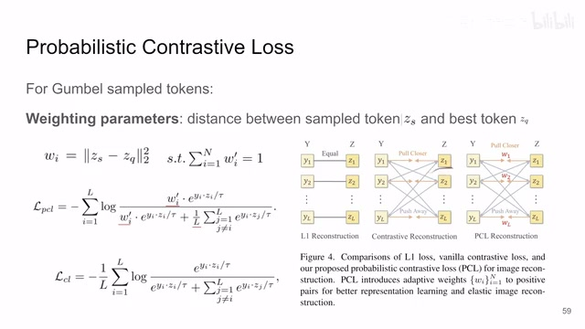
00:06:01–00:06:20 · 画面 015那么因此呢作者改进了这个 contrastive loss 那主要改进就是这边 positive sample 前面加了这个权重权重加了这一项然后呢这个 negative sample 前面加了一个 L 分之一你可以看到它这多了一个 L 分之一作者说呢把这个 push away 的这个 negative sample 的这个权重再继续降了一下那么这个呢就是作者稍加改动了它叫做这个 probabilistic contrastive loss
00:06:20–00:06:22 · 画面 016
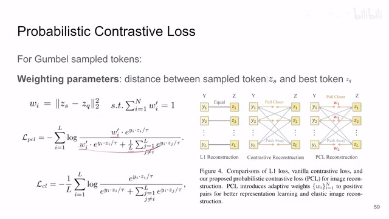
00:06:20–00:06:22 · 画面 01600:06:22–00:06:36 · 画面 017
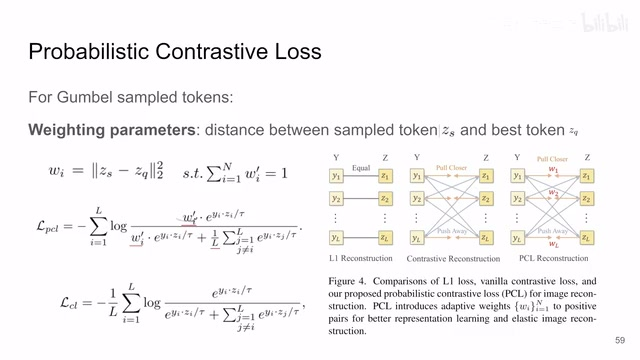
00:06:22–00:06:36 · 画面 01700:06:36–00:06:41 · 画面 018
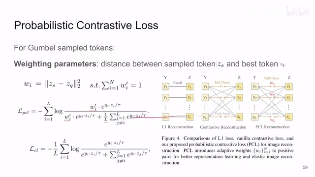
00:06:36–00:06:41 · 画面 01800:06:41–00:06:49 · 画面 019
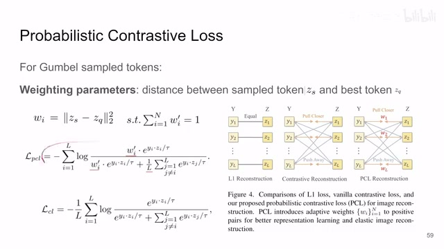
00:06:41–00:06:49 · 画面 019好的，那么以上呢就是本文作者提供的所有这个方法上的东西了。
00:06:49–00:08:17 · 画面 020
00:06:49–00:08:17 · 画面 020我们一个快速的总结。首先第一个对吧把这个确定的这个量化过程中的取最大相似。换成了这个 Gumbel Sampling那么第二个呢是在这个码表里面引入 KL Divergence。那第三个呢就是 Reconstruction 的 Loss。使用的是 Contrastive Loss通过增加 Mutual Information 的形式而不是直接使用这个 L1 或者 L2 这样的 Loss。
好了，那么文章到这里呢我就要开始吐槽了。那么当然我没有发过 CVPR。只是我觉得这篇文章既然是今年的 CVPR。它的这个 Presentation 跟我印象中的这种 CVPR 的这种水平。还是有一些差距的。我认为这篇文章在这个方法这一节呢。缺少一个明确的对它使用的 Loss 的一个总结。我们先不说那个非常让人迷惑的这个 Perceptual Loss。
就是你现在有哪怕有这些 Loss。这个 KL Divergence 有这个 Reconstruction Loss那么这些 Loss 它们怎么样结合在一起。啊这个各自的权重是多少。然后呢它们对应的训练的是哪一部分的参数。这些呢在本文中都没有被提到。那这就是一个很让人困惑的事情了。我觉得这篇文章不是 Self-contained。
所以这也可能就是我为什么发不了 CVPR。我实在不懂那么还有一个问题呢。就是作者文章中多次提到了你去看附录中的材料。但是无论你在 CVPR 的网站上。还是在它 arXiv 的版本上都没有附录的信息这个就变得更加可疑了。所以呢在本文的这个方法上。我们就先说这么多。然后呢我们看到一些结果。
00:08:17–00:08:26 · 画面 021
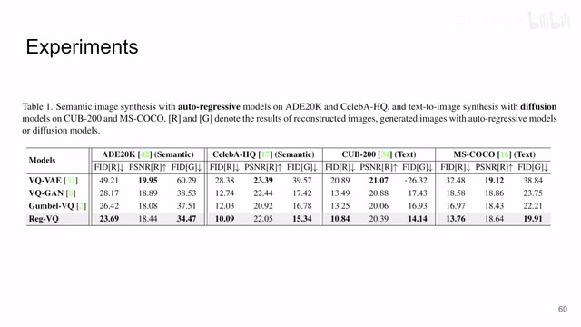
00:08:17–00:08:26 · 画面 021作者主要是做了这几个数据集。就是图像的生成吧。对比之前的 VQVAE VQGAN Gumbel-VQ那么这些一些 Ablation 还是能说明白的
00:08:26–00:09:27 · 画面 022
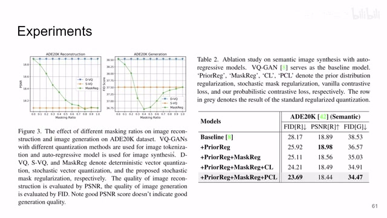
00:08:26–00:09:27 · 画面 022就是这里量了 FID 这里量了 PSNR就是文中只有一部分的 Patch。它是用 Gumbel sampling 另一部分就是直接的标准的一个量化去最大相似度那么至于 Mask 的那么这边就是有多大比例的 patch 要去做随机的采样这边一个 ablation 讲的还是很明白的那么这边就是你看到 KL divergence prior regularization loss这个 MaskReg 就是我选一部分做这个随机采样的这个东西然后还有 Contrastive Loss 本文提出的 Contrastive Loss 那么当然作者还提供了一些实际的生成的图的样例感兴趣的朋友你可以到文中查看总的来说这篇文章的 idea 我是可以理解的但是它具体的实现的疑点还是非常多那么当然还是我也没有发过 CVPR
可能这篇文章中关键的点呢我也没有找到那么希望有了解这方面的朋友呢不定次教好的那么感谢您的收看再见。
00:09:27–00:09:27 · 画面 023
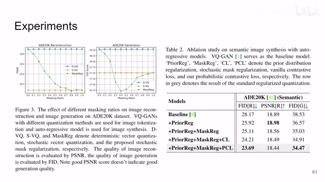
00:09:27–00:09:27 · 画面 023转写与来源说明 · 5 个自动复核提示
保留 111 个原始语音片段，5 个片段触发自动复核提示。提示仅用于定位可能的术语、重复或识别问题，不等于已确认错误。
讲解画面为源视频截图（640×360），不是可编辑 PPT 文件。全片按每秒 2 帧扫描内容变化，逐步展开页保留；连续动画保留代表画面。清晰度受源视频限制。
原视频：paper/合集_2026-10-16_内容生成/[论文简析]Regularized Vector Quantization for Tokenized Image Synthesis[2303.06424].mp4
SHA-256：1fe90f1ab15c3e09ab85d2c898d8ca25553ac5266aca95834c5d29841a8d6f97
L1 Reconstruction Loss
一个 Contrastive Loss
Mutual Information
换成了这个 Gumbel Sampling
这个 KL Divergence 有这个 Reconstruction Loss
全文按视频语音与画面制作。原论文可从上方链接下载；完整资料包保留全文、原始逐字稿、字幕和校对记录。